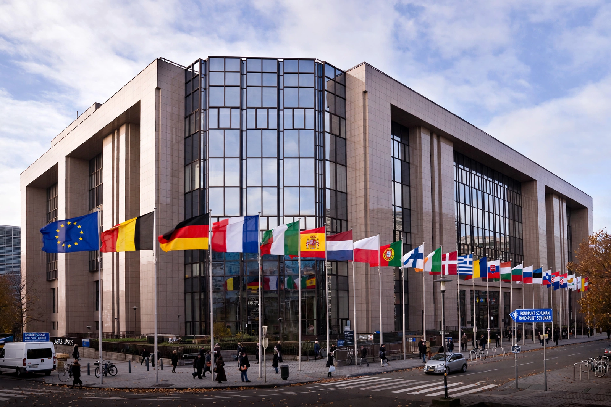

Presidency of the Council of the European Union

The presidency of the Council of the European Union is responsible for the functioning of the Council of the European Union, the upper house of the EU legislature. It rotates among the member states every six months. The presidency is not a single person but a whole national administration: the ministers of the presiding state chair most Council configurations and working parties, set agendas, broker compromises among member states and represent the Council in negotiations with the European Parliament.
Operation
Each member state holds the presidency for six months, from January to June or July to December, in an order determined unanimously by the Council. Since 2007 presidencies have cooperated in groups of three — "trio presidencies" — agreeing a common 18-month programme while each publishes its own six-month priorities. The Foreign Affairs Council is an exception: since the Treaty of Lisbon it is chaired not by the rotating presidency but by the High Representative of the Union for Foreign Affairs and Security Policy. The European Council, formerly chaired by the head of government of the presiding state, has had its own permanent president since 2009. The General Affairs Council and Coreper remain chaired by the rotating presidency, giving it a central coordinating role.
Functions
The presidency organises and chairs Council meetings, drafts compromise texts, convenes conciliation and trilogue negotiations with the Parliament and Commission, and speaks for the Council externally in areas under Council competence. Holding the presidency is regarded by member states as both an opportunity to advance favoured dossiers and an obligation of honest brokerage; the volume of work is considerable, with hundreds of meetings at ministerial, ambassadorial and working-party level in each semester.
Recent and forthcoming presidencies
Recent holders include France and the Czech Republic (2022), Sweden and Spain (2023), Belgium and Hungary (2024), Poland and Denmark (2025), and Cyprus and Ireland (2026). The United Kingdom, which was due to hold the presidency in the second half of 2017, relinquished it following the 2016 Brexit referendum, and the rotation was adjusted accordingly.